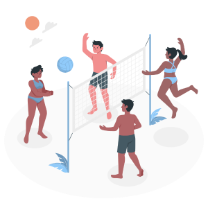
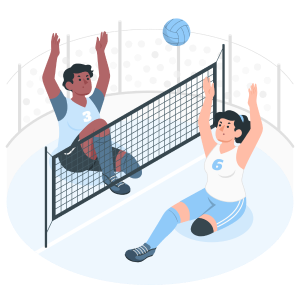

Введение в волейбол
Существуют разные виды волейбола. Например, такие как:
Пляжный волейбол:
Игра ведётся по тем же правилам, что и в классическом, но покрытие площадки уже не твёрдое, а песчаное. В каждой команде — по два игрока и замены не предусматривают
Волейбол сидя:
Разновидность волейбола для спортсменов с поражениями опорно-двигательного аппарата, паралимпийский вид спорта. В волейбол сидя играют две команды из шести человек
Расстановка, зоны и позиции на поле
Расстановка игроков на волейбольном поле предполагает условное деление площадки на 6 зон по количеству игроков. После каждого перехода право подачи переходит от одной команды к другой в результате розыгрыша очка, игроки перемещаются в следующую зону по часовой стрелке.
Связующий:
Амплуа связующего одно из наиболее важных в волейболе. От него зависит выбор направления атаки, он отвечает за правильное проведение той или иной комбинации. На схеме его позиция соответствует единице, хотя располагаться он может и в зоне атаки, а также на других позициях. Кроме названия связующий, часто можно встретить — пасующий, разводящий, распасовщик, доводчик. Зачастую связующего называют мозгом команды, связка с нападающим это его ответственность. Плохая доводка или плохой пас атакующему — это потеря очка и, наоборот, такой игрок может помочь добыть для команды большое количество баллов. Очень ценятся связующие, которые могут сделать передачу из сложной ситуации, поэтому в данном случае важны быстрые ноги и умелые руки. На этой позиции ценятся игроки, которые способны за доли секунды принимать решения, действуют с холодной головой, имеют мгновенную реакцию. Однако действия распасовщика не ограничиваются только передачами. Он может и принимать мяч, и атаковать, в зависимости от ситуации складывающейся на площадке. Часто можно увидеть, как распасовщики сразу после приема неожиданно переводят мяч через сетку на сторону противника в пустую зону. Но все же основная его задача — отдавать точные и удобные передачи.
Связующий - игрок, определяющий варианты атаки.
Нападающий первого темпа:
Нападающие первого темпа находятся в зоне, отмеченной цифрой три, и должны проводить молниеносные атаки, ставя оборону соперника в тупик. Они атакуют сразу после приема мяча вторым касанием или после короткой передачи от связующего. Дополнительно их задача — играть на блоке, выполняя функцию центрального блокирующего, хотя каждый атакующий игрок может быть блокировщиком. Нападающие первого темпа действуют на блоке постоянно из-за своего расположения у сетки. Эти игроки, как правило, самые высокие в команде.
Центральные блокирующие (нападающие первого темпа, т.е. играют с первой линии) - высокие игроки, блокирующие атаки соперника, атакуют из третьей зоны.
Нападающий второго темпа:
Нападающие второго темпа могут располагаться в зоне атаки по краям или в зоне обороны. Именно отсюда из-за трехметровой линии проходит так называемая комбинация второго темпа «пайп». Месторасположению нападающих на схеме соответствуют цифры шесть, четыре и два. Многое зависит от тренерских указаний, есть удачные расстановки, когда нападающего второго темпа в результате определенной комбинации могут вывести на атаку без блока. Функции игроков этого амплуа на площадке так же не ограничиваются только нападением, они блокировщики, могут принимать мяч и отдавать передачи.
Доигровщики (нападающиевторого темпа, т.е. играют с задней линии) - игроки, атакующие с края сетки.
Диагональный нападающий:
Сила, прыгучесть и мощь в атаке — вот основные козыри диагонального нападающего в волейболе. Они больше всех в команде набирают очков, потому что доводка мяча от связующего часто идет именно в их направлении. Их задача — обмануть блок и отправить мяч в свободную зону. В приеме мяча они не участвуют и располагаются на второй или четвертой позициях в линии атаки. Игроки данного амплуа одни из самых высоких в команде, их рост превышает два метра.
Диагональные - самые высокие и прыгучие игроки команды, как правило, атакуют с задней линии.
Либеро:
Волейбол изначально был игрой высоких спортсменов, и игроки с невысоким ростом не имели шансов стать профессионалами. В 1998 году Международная федерация волейбола изменила правила и ввела амплуа либеро, которое сосредоточено на обороне. Эти игроки располагаются на позициях один, пять и шесть и их основная задача — приём мяча и его передача связующему. Либеро не может участвовать в блоках, подачах или атаках из передней линии, но может перебрасывать мяч с задней линии. У либеро своя контрастная форма, что отличает его от других игроков. Он может быть заменён в течение игры без ограничений по количеству замен. Эффективные действия либеро в защите способствуют успеху команды.
Либеро - основной принимающий, рост обычно меньше 190 сантиметров.
Подающий:
В волейболе существуют игроки узкоспециализированной направленности — подающие. Каждый игрок, кроме либеро, должен уметь выполнять подачу, но некоторые достигают в этом особых успехов благодаря тренировкам. Подающий не имеет четкой позиции на площадке и часто используется тренером в качестве джокера перед подачей своей команды. Игроки такого амплуа могут за счет хитрых подач, эйсов или планеров набирать значительное количество очков подряд — иногда по пять-шесть, а то и больше.